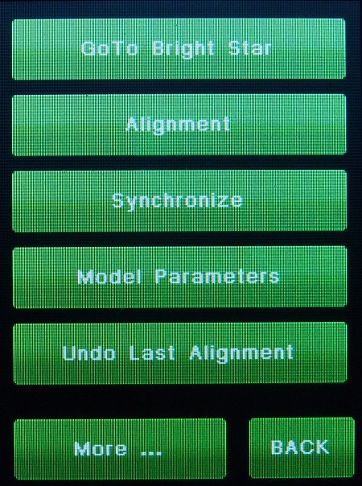
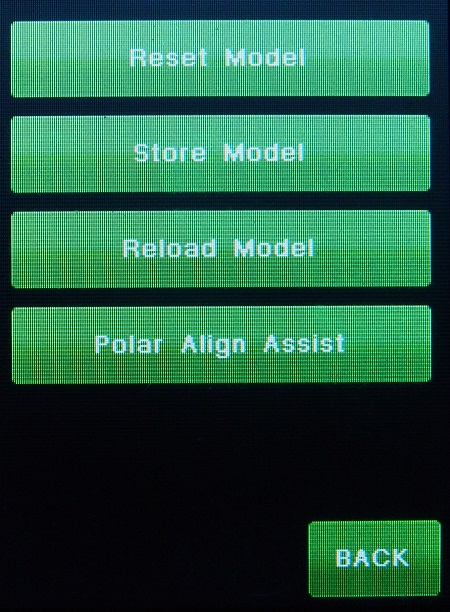

| G2 vs. G1 Modeling Differences |
| Please remember that Gemini-II was expected to offer the functionality of Gemini-I. Regarding the modeling, this is done by the Align menu screen. It offers direct access, shows the results on the Parameters screen, but expects that you've done your duties first: to center the object before pushing the Alignment button to supply the necessary data for building a model. |
|  | You get to
menu on the left in the hand controller using Menu-->Align.
With this menu you can do a manual alignment, A Synchronize. look at
model Parameters, and undo the last star added to the alignment. The more button brings up the menu below. If you want to use this page to build a model, you first have must used the GOTO menu or the "GOTO Bright Star" menu at the top if this menu, selected a bright star, GOTO it, and then centered on it. Then you can come back to this menu and hit the "Alignment" button on the left to add it to the model. If you want to see the model Parameters, hit the model parameters button. You can also hit the "Synchronize" button to have a the mount center it's calculations around the centered star. This can help a already calculated model to be in alignment with the current mount position. |
|  |
On it you can reset the model. Store the model into the Micro-SDcard.
Recall the model from the Micro SDcard, or Do Polar Align Assist. For Polar Align Assist, There must be no model built at all. |
|
The Model Builder is a convenient Add-On that came later. As with other functions (Quick Start, Polar Align Assist, Catalog Tour) it guides through the pages as a convenience. It lends a hand to a new user or someone that wants to setup the mount quickly. See Model Builder Menus You get to this menu in the hand controller by Menu-->Funct-->Modeling It is bad practice to mix and match these two different method, as it can get quite confusing, and also mess up any model you build. Pick one and use it, but don't go back and forth. Some may say, that there is a certain inconsistency between both, but this can't be avoided. Many users do it one way, others the other. If you already have a model built, using either method, and want to use it again later, you should simply GoTo an object after startup, center it and push MENU->ALIGN->Synchronize. This keeps the model intact but corrects for smaller offsets and time differences. Having said this, it should be clear that pushing "Alignment" or "Synchronize" on the Align screen w/o having the object centered before your model will be spoiled and pointing will be off. If you have done this inadvertently, there is the "Undo Last Alignment" button (which works only for the very last alignment or synchronization) to make in undone. René does understand the frustration after having the telescope pointing to an object and then finding nothing in the eyepiece or on the chip. In fact, this was the force driving him to develop this modeling algorithm 8) René done the math and please believe him, no 2-star align can reliably produce similar results. It is simply not possible, by the underlying physical laws. Sometimes it works well (to a certain degree within certain limits) and in other constellations, it will fail. What clearly shows up is that a new manual is needed. Please read through the G1 manual, it gives the information how to use the modeling the G1 way (and G2's MENU->ALIGN). Although everyone will agree on this, most people won't read it, which is a shame. At least not before using the mount, maybe later in case of trouble. As a computer scientist, René knows what he is talking about. As an engineer, I would write a technical manual, but this wouldn't really help most users, too. Hopefully Hollywood chimes in with some movies... René (the above was adapted from a Gemini-2 thread that Rene had with users as a conversation with users in the users group. I just removed the names from most of the text and added example links..) |